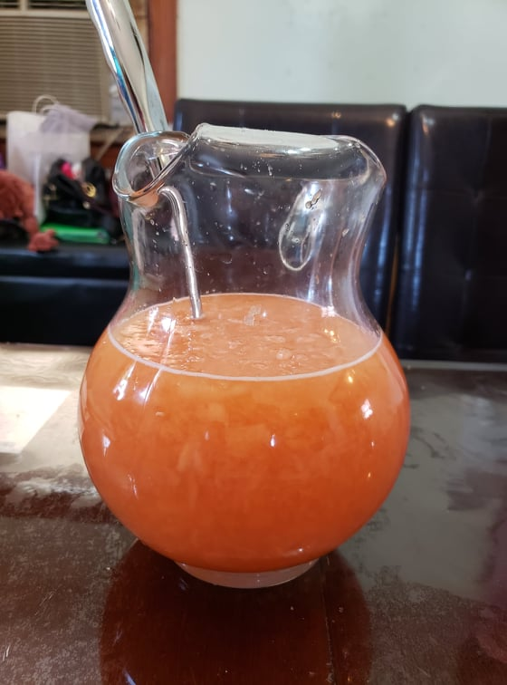

Melon

Ingredients:
- 1 Cantaloupe
- 3/4 cup Sugar
- 4-6 cups Water
Instructions:
- Cut the cantaloupe in half and scoop out the seeds with a spoon
- Using a coconut grater, shred the flesh of the cantaloupe into a pitcher.
- Mix in the water and the sugar. Serve chilled or over ice.